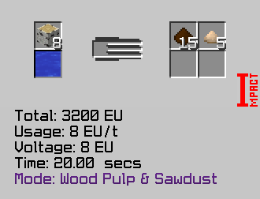
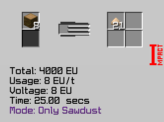
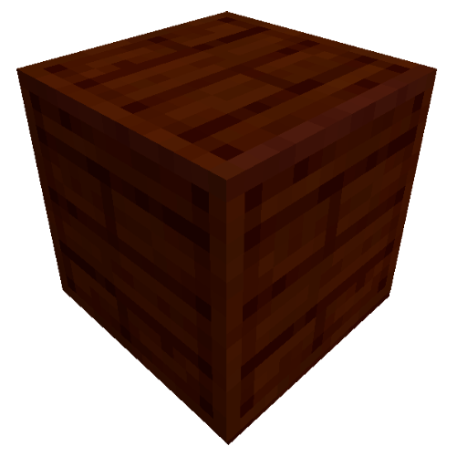

Saw Mill в собранной форме
Режим 1. Planks & Sawdust (Доски и Опилки):
Режим 2. Wood Pulp & Sawdust (Древесная масса и Опилки):
Режим 3. Only Sawdust (Только Опилки):
Режим Planks & Sawdust
Режим Wood Pulp & Sawdust
Режим Only Sawdust
Для включения голограммы (подсказка при постройке) используйте Multiblock Machine Blueprint из мода TecTech, кликните им по контролеру мультиблока.
Saw Mill Conveyor
Wooden Casing